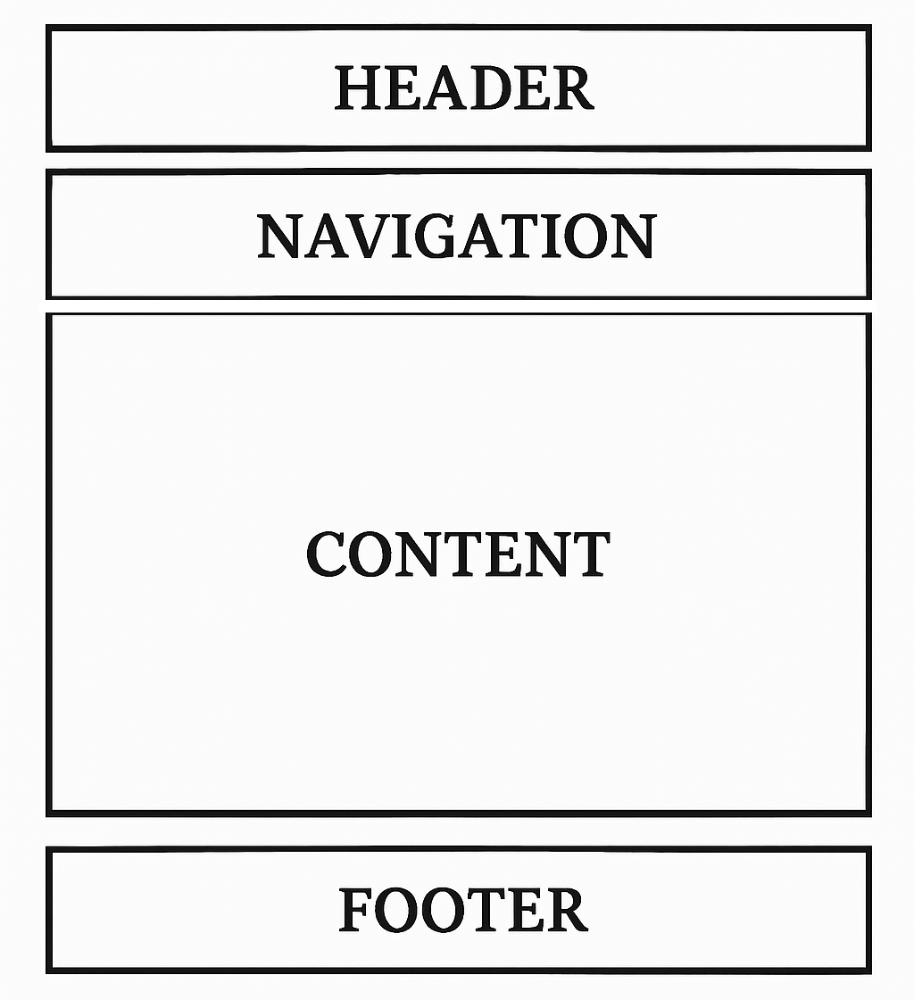
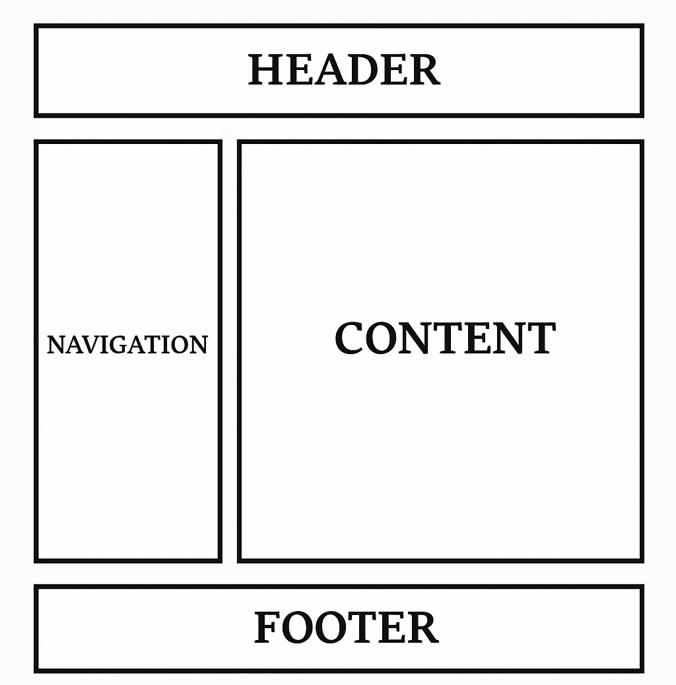
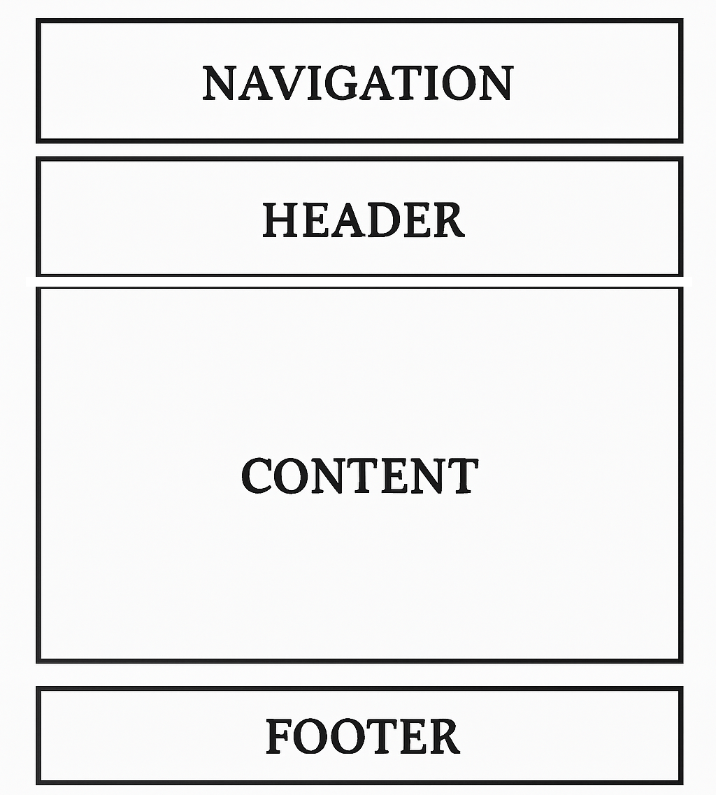

Събиране и обработка на информацията– първият етап включва събиране на цялата необходима информация за
съдържанието, целевата аудитория и целите на уеб страницата.
Изготвяне на схематичен модел (wireframe) на отделните страници– прави се схема на разположението на различните елементи на
страницата. Този етап помага за визуализиране на структурата преди да се започне с
дизайна.
Утвърждаване на проекта– планира се времето и основните дейности свързани с изработката на
отделните елементи на страницата.
Графичен интерфейс– това е визуалната подредба на всички елементи от съдържанието на уеб сайт.
Графичният интерфейс определя как потребителите взаимодействат със сайта и как се представя
информацията.
Графичен дизайн– това е процесът по оформяне на външния вид на сайт. Включва избора на
цветова палитра, шрифтове, изображения и други визуални елементи, които създават цялостното
впечатление от сайта.
Централни елементи на уеб страница
Лого на сайта – визуален идентификатор на сайта или организацията
Основна навигация към основните нива – връзки към ключовите раздели на сайта
Допълнителна навигация към допълнителните нива – допълнителни менюта и връзки
Различни графични елементи – икони, бутони, разделители и други визуални
компоненти
Основна структура на уеб страница
Заглавна част (header) – име и изображение на представяния обект
Главна навигационна част (main navigation) – връзки към вътрешните страници от
сайта
Част за съдържание (content) – основната информационна част на страницата
Долна част (footer) – информация за автора, допълнителни връзки
Пример:



Начална страница– целта и е да привлича вниманието на потребителя, акцентирайки върху логото и
навигацията на сайта.Задължително:
Да съдържа логото и името на сайта
Да има връзки към главните подстраници или основното съдържание
Да информира за целта на уеб сайта
Да приветства потребителя и да му даде представа какво би могъл да открие в сайта
Вътрешни страници– целта им е да задържат вниманието на потребителя. Задължително е да са в
стила на началната страница и да са в единство с предходните страници. Основен акцент е съдържанието
на страницата.
Изисквания при изграждане на сайтове за хора с увреждания
Уеб достъпност– подпомагане на ползвателите с увреждания да получават достъп до
информацията и функционалностите на уеб сайтове.
За да се постигне уеб достъпност е необходимо сайтовете да са:
Проектирани при спазване на правилата за уеб достъп
Разработени така, че всички потребители да имат достъп до информацията и
функционалността на сайта
Проектирани с мисъл за всички увреждане и дефицити на личността